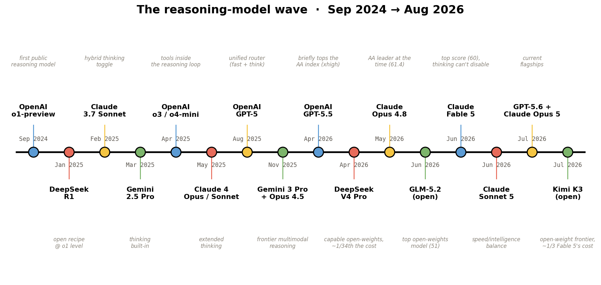
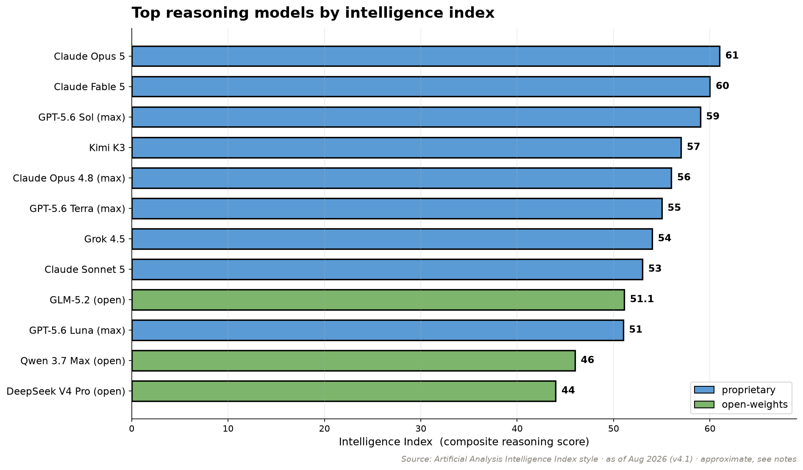
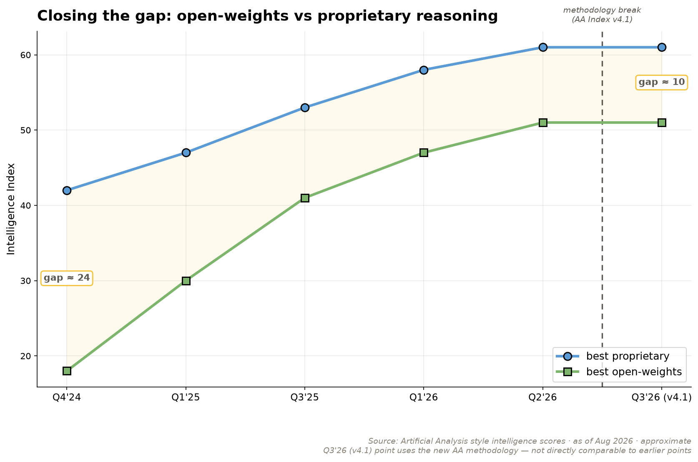

class: center, middle # Reasoning LLMs ## From First Principles to a From-Scratch R1 Recipe Lucas Soares · O'Reilly Live Training --- # Agenda **1. Intro to Reasoning LLMs** — what they are, why now -- **2. The DeepSeek R1 Paper** — reading the recipe -- **3. The R1 Recipe in Code** — five stages, three notebooks --- class: center, middle <div style="font-size: 4em; color: #ddd; font-family: 'IBM Plex Sans';">01</div> # Intro to Reasoning LLMs *What they are, why now* ??? This module is visual-first. Most slides are one image + one line — narrate the rest. The arc: what is reasoning → seeing it in the wild → where models rank → why/when to use → how to prompt → limits. Assets live in presentation/assets/. Swap thinking_in_the_wild.png for real product screenshots if you have them. --- ## What do we mean by "reasoning"? **Recall** — look something up: <div style="background: #FEF8E6; border: 2px solid #000000; border-radius: 0px; padding: 16px; margin-top: 8px;"> "What's the course code for Stanford's Transformers class?" → CME 295 </div> **Reasoning** — work it out: <div style="background: #FEF8E6; border: 2px solid #000000; border-radius: 0px; padding: 16px; margin-top: 8px;"> "A bear was born in 2020. How old in 2025?" → 2025 − 2020 = <strong>5</strong> </div> Reasoning = solving a problem through a **multi-step process**, not a single lookup. ??? Source framing: Stanford CME295 Fall 2025, Lecture 6. No agreed formal definition — this is the working one. --- ## What is a reasoning LLM? <img src="assets/reasoning_vs_vanilla.png" style="max-height: 370px; max-width: 92%; display: block; margin: 0 auto;"> <div style="background: #FEF8E6; border: 2px solid #000000; border-radius: 0px; padding: 16px; margin-top: 8px; text-align: center;"> The output contract changes: <strong>Output = reasoning chain + answer.</strong> </div> --- ## You've already seen these everywhere <img src="assets/thinking_in_the_wild.png" style="max-height: 370px; max-width: 92%; display: block; margin: 0 auto;"> <div style="background: #FEF8E6; border: 2px solid #000000; border-radius: 0px; padding: 16px; margin-top: 8px; text-align: center;"> The <strong>"Thinking…"</strong> tag is the tell — ChatGPT, Claude, Gemini, DeepSeek all show it. </div> ??? Like the Stanford lecture's montage: thought summaries / <think> traces all over modern UIs. Drop in your own real screenshots here if you'd like. --- ## A catch: you pay for the thoughts Reasoning tokens are **billed as output tokens** — on every major API. - UIs show a *summarized* thought, not the raw chain (barely-readable, and exposed chains could train rivals) - So there's a real incentive to get **the most reasoning per token** <div style="background: #FEF8E6; border: 2px solid #000000; border-radius: 0px; padding: 16px; margin-top: 16px;"> More on controlling the thinking budget later. </div> --- ## How we got here <p></p> <div style="background: #FEF8E6; border: 2px solid #000000; border-radius: 0px; padding: 16px; margin-top: 8px; text-align: center;"> o1-preview kicked it off (Sep 2024). DeepSeek-R1 (Jan 2025) made the <strong>recipe public</strong>. </div> --- ## Where the models rank today <p></p> <p style="text-align: center; color: #5C5750; margin-top: 8px;">Demand concentrates on a handful of top labs. <em>(Artificial Analysis, ~Aug 2026, Intelligence Index v4.1.)</em></p> --- ## Closing the gap <p></p> <div style="background: #FEF8E6; border: 2px solid #000000; border-radius: 0px; padding: 16px; margin-top: 8px; text-align: center;"> Open-weights reasoning models now trail the frontier by <strong>months, not years</strong>. </div> --- ## Why reach for a reasoning model? It earns its extra tokens when the task is a **derivation**, not a lookup: - Decomposes hard, multi-constraint problems - Hallucinates less on problems it can *check itself* on - Gives you the **reasoning**, not just the verdict --- ## What actually matters when you pick one <img src="assets/choosing_criteria.png" style="max-height: 370px; max-width: 90%; display: block; margin: 0 auto;"> <p style="text-align: center; color: #5C5750; margin-top: 8px;">Reasoning quality · price · built-in knowledge · speed · context window.</p> --- ## Price is the other axis <div style="display: grid; grid-template-columns: repeat(3, 1fr); gap: 10px; margin: 20px 0;"> <div style="background: #FFFFFF; padding: 10px; border: 2px solid #000000; border-radius: 0px; text-align: center;"> <h4 style="margin: 0 0 6px; color: #000000; font-size: 15px;">Claude Fable 5</h4> <p style="font-size: 20px; font-weight: 700; margin: 4px 0;">~$50</p> <p style="font-size: 11px; color: #5C5750; margin: 0;">priciest, no off-switch</p> </div> <div style="background: #FFFFFF; padding: 10px; border: 2px solid #000000; border-radius: 0px; text-align: center;"> <h4 style="margin: 0 0 6px; color: #000000; font-size: 15px;">GPT-5.6 Sol</h4> <p style="font-size: 20px; font-weight: 700; margin: 4px 0;">~$30</p> <p style="font-size: 11px; color: #5C5750; margin: 0;">frontier</p> </div> <div style="background: #FFFFFF; padding: 10px; border: 2px solid #000000; border-radius: 0px; text-align: center;"> <h4 style="margin: 0 0 6px; color: #000000; font-size: 15px;">Claude Opus 5</h4> <p style="font-size: 20px; font-weight: 700; margin: 4px 0;">~$25</p> <p style="font-size: 11px; color: #5C5750; margin: 0;">frontier</p> </div> <div style="background: #EEF5EC; padding: 10px; border: 2px solid #000000; border-radius: 0px; text-align: center;"> <h4 style="margin: 0 0 6px; color: #000000; font-size: 15px;">Kimi K3</h4> <p style="font-size: 20px; font-weight: 700; margin: 4px 0;">~$15</p> <p style="font-size: 11px; color: #5C5750; margin: 0;">open-weight, ~1/3 Fable 5's cost</p> </div> <div style="background: #FFFFFF; padding: 10px; border: 2px solid #000000; border-radius: 0px; text-align: center;"> <h4 style="margin: 0 0 6px; color: #000000; font-size: 15px;">Gemini 3.1 Pro</h4> <p style="font-size: 20px; font-weight: 700; margin: 4px 0;">~$12</p> <p style="font-size: 11px; color: #5C5750; margin: 0;"> </p> </div> <div style="background: #EEF5EC; padding: 10px; border: 2px solid #000000; border-radius: 0px; text-align: center;"> <h4 style="margin: 0 0 6px; color: #000000; font-size: 15px;">DeepSeek V4 Pro</h4> <p style="font-size: 20px; font-weight: 700; margin: 4px 0;">~$0.87</p> <p style="font-size: 11px; color: #5C5750; margin: 0;">capable open-weights, ~34× cheaper</p> </div> </div> <div style="background: #FEF8E6; border: 2px solid #000000; border-radius: 0px; padding: 16px; margin-top: 8px;"> The expensive model isn't always the right call. <em>(Approx; we test this in notebook 05.)</em><br> <span style="font-size: 13px; color: #5C5750;">These prices will drift — for live numbers: <a href="https://artificialanalysis.ai/models/recommend" style="color: #5C5750;">artificialanalysis.ai/models/recommend</a></span> </div> --- ## Why does thinking longer help? <img src="assets/01_test_time_compute.png" style="max-height: 370px; max-width: 75%; display: block; margin: 0 auto;"> <p style="text-align: center; color: #5C5750; margin-top: 8px;">Every generated token is another forward pass — reasoning tokens <strong>buy compute</strong> before the model commits.</p> --- ## The simplest version of the trick <img src="assets/cot_paper_fig1.png" style="max-height: 460px; max-width: 96%; display: block; margin: 0 auto;"> <p style="text-align: center; color: #5C5750; margin-top: 8px;">"Let's think step by step." Chain-of-thought, scaled up, <em>is</em> the core idea. <em>(after Wei et al., 2022)</em></p> --- ## Two reasons a reasoning chain helps 1. **Decomposition** — break a problem the model has never seen into sub-problems it *has*. 2. **More compute** — more tokens before the answer = more computation spent on it. <div style="background: #FEF8E6; border: 2px solid #000000; border-radius: 0px; padding: 16px; margin-top: 40px;"> Extended chains and self-correction ("wait, that's wrong…") <strong>emerge from RL</strong>, not just from prompting. </div> --- ## When to use one — and when not to <img src="assets/when_to_use.png" style="max-height: 370px; max-width: 92%; display: block; margin: 0 auto;"> <p style="text-align: center; color: #5C5750; margin-top: 8px;">Great for hard, single-shot problems. Wasteful for cheap, high-volume extraction.</p> --- ## How to prompt a reasoning model - Keep the prompt **short and direct** — don't hand-write the chain of thought for it - Frame it as an **expert generalist**; state the goal, not the steps - Give it **clear success/failure criteria** for what a good answer looks like - Tune **effort/budget** to the task instead of always maxing it ??? Over-prompting CoT can hurt models already trained to reason. See OpenAI/Anthropic prompting guides. --- ## You're not prompting a model — you're prompting an agent <img src="assets/agent_prompt_anatomy.png" style="max-height: 370px; max-width: 70%; display: block; margin: 0 auto;"> <p style="text-align: center; color: #5C5750; margin-top: 8px;">Goal · return format · context · tools · actions. Modern reasoning systems route and act.</p> --- ## The effort knobs - **OpenAI:** `reasoning.effort = none / low / medium / high / xhigh / max` - **Anthropic:** `output_config.effort = low / medium / high / xhigh / max` (current models) — `thinking.budget_tokens` still on Haiku 4.5 - **Google:** thinking config on the Gemini models - **Kimi K3 (Moonshot, open-weight):** `reasoning_effort = low / high / max` <div style="background: #FEF8E6; border: 2px solid #000000; border-radius: 0px; padding: 12px; margin-top: 12px;"> Same model, dial the depth to the task.<br> Hands-on: <code>notebooks/provider_openai_thinking_parameters.ipynb</code> · <code>notebooks/provider_anthropic_extended_thinking.ipynb</code> </div> <div style="background: #E8F1F9; border: 2px solid #000000; border-radius: 0px; padding: 12px; margin-top: 8px;"> <strong>The frontier trend:</strong> Claude Fable 5 and Kimi K3 can't turn thinking off at all anymore — always-on, no disable switch — but the depth dial still works fully. The dial is becoming universal; the <em>off-switch</em> is disappearing. </div> --- ## Limitations (keep them honest) - 5–50× more tokens → **cost & latency** - Early/open models: **language mixing**, sensitivity to few-shot - The visible "thought" is a summary — and **may not be faithful** <em>(Anthropic: "reasoning models don't always say what they think")</em> --- class: center, middle <h1> <span style="background-color: #7CB56B; color: #FFFFFF; padding: 8px 16px;"> DEMO — Scratchpad vs. direct answer </span> </h1> <p style="margin-top: 16px; font-size: 15px; color: #5C5750;"><code>notebooks/01_foundations_reasoning_and_cot.ipynb</code></p> <p style="margin-top: 16px; font-size: 18px;">A tiny model learns that <strong>a scratchpad beats answering directly</strong> — the whole idea, measured, on your laptop.</p> --- ## Recap - Reasoning ≠ retrieval — **output = reasoning + answer** -- - You can *see* it (the "Thinking…" tag) and you *pay* for it -- - Trade tokens for accuracy — only when the task needs it -- <div style="background: #FEF8E6; border: 2px solid #000000; border-radius: 0px; padding: 16px; margin-top: 16px;"> Next: how DeepSeek <strong>trained</strong> one, then we <strong>rebuild</strong> it in code. </div> --- class: center, middle <div style="font-size: 4em; color: #ddd; font-family: 'IBM Plex Sans';">02</div> # The DeepSeek R1 Paper *Reading the paper — arxiv.org/pdf/2501.12948* --- ## Why this paper matters <div style="background: #FEF8E6; border: 2px solid #000000; border-radius: 0px; padding: 24px; margin-top: 24px; text-align: center; font-size: 20px;"> Open weights + an open recipe for o1-level reasoning. </div> --- ## How do you train a model to *think*? You don't write the reasoning for it. You **incentivize** it: - Show a few examples of **thinking through** a problem (cold-start) - Then **reward** the behavior you want with RL: - did it get the answer **right**? (accuracy) - did it use the **`<think>` markers**? (format) - did it **stay in one language**? (consistency) <div style="background: #FEF8E6; border: 2px solid #000000; border-radius: 0px; padding: 16px; margin-top: 16px;"> No human writes the chains. The model discovers them. </div> --- ## The trick: verifiable rewards For math and code you can **check the answer automatically** — no learned reward model, no human rater in the loop. - Math → compare to the parsed ground-truth number - Code → run the **unit tests** <div style="background: #FEF8E6; border: 2px solid #000000; border-radius: 0px; padding: 16px; margin-top: 16px;"> A cheap, unhackable signal is what makes pure-RL reasoning possible. </div> --- ## R1-Zero vs R1 <div style="display: grid; grid-template-columns: 1fr 1fr; gap: 24px; margin: 32px 0;"> <div style="background: #FBEAE7; padding: 16px; border: 2px solid #000000; border-radius: 0px;"> <h4 style="margin-top: 0; color: #000000;">R1-Zero</h4> <p style="font-size: 15px; color: #2A2825;">Pure RL on a base model, no SFT. Works — but ugly outputs.</p> </div> <div style="background: #EEF5EC; padding: 16px; border: 2px solid #000000; border-radius: 0px;"> <h4 style="margin-top: 0; color: #000000;">R1</h4> <p style="font-size: 15px; color: #2A2825;">Add a small cold-start SFT + a second SFT pass. Same skill, readable.</p> </div> </div> --- ## The "aha moment" <img src="assets/02_aha_moment.png" style="max-height: 460px; max-width: 88%; display: block; margin: 0 auto;"> ??? Cropped from DeepSeek R1 paper (arxiv 2501.12948), Table 2. --- ## Accuracy curve <img src="assets/02_aime_curve.png" style="max-height: 460px; max-width: 88%; display: block; margin: 0 auto;"> ??? Cropped from DeepSeek R1 paper (arxiv 2501.12948), Figure 1. --- ## The 5-stage recipe <img src="assets/02_recipe_diagram.png" style="max-height: 360px; max-width: 92%; display: block; margin: 0 auto;"> --- ## GRPO — the 30-second intuition <div style="display: flex; justify-content: center; align-items: stretch; gap: 10px; margin: 32px 0;"> <div style="background: #FBEAE7; border: 2px solid #000000; padding: 16px; border-radius: 0px; text-align: center; width: 120px;"> <div style="font-size: 1.8em; margin-bottom: 8px; color: #E86B5A;">1</div> <h4 style="margin: 8px 0; color: #000000; font-weight: 600; font-size: 13px;">Ask G times</h4> <p style="font-size: 11px; color: #5C5750; margin: 0;">same question, e.g. G = 16</p> </div> <div style="font-size: 24px; color: #2A2825; align-self: center;">→</div> <div style="background: #FEF8E6; border: 2px solid #000000; padding: 16px; border-radius: 0px; text-align: center; width: 120px;"> <div style="font-size: 1.8em; margin-bottom: 8px; color: #F5C542;">2</div> <h4 style="margin: 8px 0; color: #000000; font-weight: 600; font-size: 13px;">Score each</h4> <p style="font-size: 11px; color: #5C5750; margin: 0;">simple rules: right? formatted?</p> </div> <div style="font-size: 24px; color: #2A2825; align-self: center;">→</div> <div style="background: #EEF5EC; border: 2px solid #000000; padding: 16px; border-radius: 0px; text-align: center; width: 120px;"> <div style="font-size: 1.8em; margin-bottom: 8px; color: #7CB56B;">3</div> <h4 style="margin: 8px 0; color: #000000; font-weight: 600; font-size: 13px;">Advantage</h4> <p style="font-size: 11px; color: #5C5750; margin: 0;">vs. the group average</p> </div> <div style="font-size: 24px; color: #2A2825; align-self: center;">→</div> <div style="background: #E8F1F9; border: 2px solid #000000; padding: 16px; border-radius: 0px; text-align: center; width: 120px;"> <div style="font-size: 1.8em; margin-bottom: 8px; color: #5B9BD5;">4</div> <h4 style="margin: 8px 0; color: #000000; font-weight: 600; font-size: 13px;">Nudge policy</h4> <p style="font-size: 11px; color: #5C5750; margin: 0;">↑ above avg, ↓ below avg</p> </div> </div> <div style="background: #FEF8E6; border: 2px solid #000000; border-radius: 0px; padding: 16px; margin-top: 8px; text-align: center;"> No value net. No human rater. The <strong>group is the baseline</strong>. </div> --- ## Why no critic? <div style="display: grid; grid-template-columns: 1fr 1fr; gap: 24px; margin: 24px 0;"> <div style="background: #FBEAE7; padding: 16px; border: 2px solid #000000; border-radius: 0px;"> <h4 style="margin-top: 0; color: #000000;">PPO (classic RL)</h4> <ul style="font-size: 14px; color: #2A2825;"> <li><strong>Baseline:</strong> learned value model (extra NN)</li> <li><strong>Networks trained:</strong> policy + value</li> <li><strong>Memory:</strong> ~2×</li> <li><strong>Reward source:</strong> learned reward model (usually)</li> </ul> </div> <div style="background: #EEF5EC; padding: 16px; border: 2px solid #000000; border-radius: 0px;"> <h4 style="margin-top: 0; color: #000000;">GRPO (DeepSeek)</h4> <ul style="font-size: 14px; color: #2A2825;"> <li><strong>Baseline:</strong> mean reward of the group</li> <li><strong>Networks trained:</strong> policy only</li> <li><strong>Memory:</strong> ~1×</li> <li><strong>Reward source:</strong> rule-based (correct? formatted?)</li> </ul> </div> </div> <p style="text-align: center; color: #5C5750; margin-top: 8px;">Half the moving parts. No reward hacking from a learned critic.</p> --- ## GRPO in one picture <img src="assets/02_grpo_intuition.png" style="max-height: 360px; max-width: 88%; display: block; margin: 0 auto;"> <p style="text-align: center; color: #5C5750; margin-top: 8px;"><em>One prompt → G rollouts → rule-based rewards → z-score advantages.</em></p> --- ## The formal objective <img src="assets/02_grpo_objective.png" style="max-height: 380px; max-width: 88%; display: block; margin: 0 auto;"> <div style="background: #FEF8E6; border: 2px solid #000000; border-radius: 0px; padding: 12px; margin-top: 8px; text-align: center; font-size: 15px;"> Clipped PPO-style update — but the advantage <code>Â</code> is just the <strong>z-score of the group rewards</strong>. That's the whole trick. </div> ??? Cropped from DeepSeek R1 paper (arxiv 2501.12948), §2.2.1 eqs (1)–(3). --- ## Reward design - **Accuracy reward** — does the final answer match? - **Format reward** — did it use `<think>...</think>`? No learned reward model. Rule-based only. --- ## Distillation results <img src="assets/02_distillation_table.png" style="max-height: 370px; max-width: 90%; display: block; margin: 0 auto;"> ??? Cropped from DeepSeek R1 paper (arxiv 2501.12948), Table 15. --- ## Limitations <div style="background: #FEF8E6; border: 2px solid #000000; border-radius: 0px; padding: 24px; margin-top: 24px; text-align: center; font-size: 20px;"> Language mixing, sensitivity to few-shot, weaker on general chat. </div> --- class: center, middle <div style="font-size: 4em; color: #ddd; font-family: 'IBM Plex Sans';">03</div> # The R1 Recipe in Code *Five stages, three notebooks* <p style="font-size: 16px; color: #5C5750; margin-top: 16px;">One toy task — 1-digit addition — runs through every stage.<br>We watch one number climb the whole way: the task pass-rate.</p> --- ## The map: 5 stages → 3 notebooks <div style="display: grid; grid-template-columns: 1fr 1fr 1fr; gap: 16px; margin: 24px 0;"> <div style="background: #FFFFFF; padding: 16px; border: 2px solid #000000; border-radius: 0px;"> <div style="font-size: 1.6em; color: #E86B5A;">01</div> <h4 style="margin: 8px 0; color: #000000;">Foundations</h4> <p style="font-size: 13px; color: #5C5750; margin: 0 0 8px;">base model + why a scratchpad helps</p> <p style="font-size: 13px; color: #2A2825; margin: 0;">intermediate tokens <em>measurably</em> help</p> </div> <div style="background: #FFFFFF; padding: 16px; border: 2px solid #000000; border-radius: 0px;"> <div style="font-size: 1.6em; color: #F5C542;">02</div> <h4 style="margin: 8px 0; color: #000000;">The RL core</h4> <p style="font-size: 13px; color: #5C5750; margin: 0 0 8px;">cold-start SFT → GRPO</p> <p style="font-size: 13px; color: #2A2825; margin: 0;">teach the format, then reward correctness</p> </div> <div style="background: #FFFFFF; padding: 16px; border: 2px solid #000000; border-radius: 0px;"> <div style="font-size: 1.6em; color: #7CB56B;">03</div> <h4 style="margin: 8px 0; color: #000000;">Amplify & compress</h4> <p style="font-size: 13px; color: #5C5750; margin: 0 0 8px;">rejection-SFT → distillation</p> <p style="font-size: 13px; color: #2A2825; margin: 0;">self-improve, then shrink</p> </div> </div> <div style="background: #FEF8E6; border: 2px solid #000000; border-radius: 0px; padding: 16px; margin-top: 8px; text-align: center;"> Each notebook runs top-to-bottom on a <strong>laptop CPU</strong> in minutes. </div> --- ## Notebook 01 — Foundations <div style="background: #FEF8E6; border: 2px solid #000000; border-radius: 0px; padding: 16px; margin-top: 16px;"> Every reasoning model starts as a plain <strong>next-token predictor</strong>. </div> Then the key experiment: train two tiny models on addition — one answers **directly**, one gets a **`<think>` scratchpad**. `notebooks/01_foundations_reasoning_and_cot.ipynb` --- ## The insight that justifies the whole course The scratchpad model wins. <div style="background: #FEF8E6; border: 2px solid #000000; border-radius: 0px; padding: 16px; margin-top: 16px;"> Intermediate tokens aren't decoration — they're <strong>computation</strong>.<br> That single result is <em>why</em> reasoning models exist. </div> --- ## Notebook 02 — The RL core (1/2): Cold-start SFT <div style="background: #FEF8E6; border: 2px solid #000000; border-radius: 0px; padding: 16px; margin-top: 16px;"> Teach the <strong>format</strong> first: <code><think>…</think><answer>…</answer></code>. </div> A handful of examples locks in the shape — answers still mostly wrong. Pass-rate: low single digits. That's expected. --- ## Notebook 02 — The RL core (2/2): GRPO <div style="background: #FEF8E6; border: 2px solid #000000; border-radius: 0px; padding: 16px; margin-top: 16px;"> Sample the same prompt <strong>G times</strong>, score each by rule, push toward the group's best. </div> No critic. No value network. No human labels — **the group is the baseline**. Watch the pass-rate climb. `notebooks/02_rl_core_coldstart_sft_and_grpo.ipynb` --- ## Notebook 03 — Amplify (1/2): Rejection-sampling SFT <div style="background: #FEF8E6; border: 2px solid #000000; border-radius: 0px; padding: 16px; margin-top: 16px;"> Use the RL'd model as a <strong>data factory</strong>: generate → keep only correct → fine-tune. </div> The pass-rate jumps again with **no new training signal** — just better data. --- ## Notebook 03 — Compress (2/2): Distillation <div style="background: #FEF8E6; border: 2px solid #000000; border-radius: 0px; padding: 16px; margin-top: 16px;"> Pour the skill into a <strong>smaller student</strong> with KL on the logits. </div> A model ~**1/7 the size** keeps most of the pass-rate. `notebooks/03_amplify_and_compress_rejection_sft_and_distillation.ipynb` --- ## The payoff — one metric, the whole recipe <div style="display: flex; align-items: flex-end; gap: 12px; margin: 32px 0 0;"> <div style="display: flex; flex-direction: column; align-items: center; justify-content: space-between; width: 40px; height: 90px;"> <span style="font-size: 20px; line-height: 1;">↑</span> <span style="font-size: 10px; color: #5C5750; writing-mode: vertical-rl; transform: rotate(180deg); text-transform: uppercase; letter-spacing: 0.05em;">pass-rate</span> </div> <div style="flex: 1; display: grid; grid-template-columns: repeat(4, 1fr); gap: 12px; align-items: end; height: 90px; border-left: 2px solid #000000; border-bottom: 2px solid #000000; padding-left: 12px;"> <div style="background: #FBEAE7; border: 2px solid #000000; border-bottom: none; height: 30px;"></div> <div style="background: #FEF8E6; border: 2px solid #000000; border-bottom: none; height: 55px;"></div> <div style="background: #EEF5EC; border: 2px solid #000000; border-bottom: none; height: 85px;"></div> <div style="background: #E8F1F9; border: 2px solid #000000; border-bottom: none; height: 85px;"></div> </div> </div> <div style="display: flex; gap: 12px; margin-top: 8px; padding-left: 52px;"> <div style="flex: 1; text-align: center;"> <h4 style="margin: 0 0 4px; color: #000000; font-size: 14px;">Cold-start</h4> <p style="font-size: 12px; color: #5C5750; margin: 0;">format</p> </div> <div style="flex: 1; text-align: center;"> <h4 style="margin: 0 0 4px; color: #000000; font-size: 14px;">GRPO</h4> <p style="font-size: 12px; color: #5C5750; margin: 0;">skill</p> </div> <div style="flex: 1; text-align: center;"> <h4 style="margin: 0 0 4px; color: #000000; font-size: 14px;">Reject-SFT</h4> <p style="font-size: 12px; color: #5C5750; margin: 0;">stability</p> </div> <div style="flex: 1; text-align: center;"> <h4 style="margin: 0 0 4px; color: #000000; font-size: 14px;">Distill</h4> <p style="font-size: 12px; color: #5C5750; margin: 0;">efficiency (smaller)</p> </div> </div> <p style="text-align: center; color: #5C5750; font-size: 13px; margin-top: 8px;"><em>(Exact numbers print live in the notebook — that's the demo.)</em></p> --- ## This is still how it's done The same recipe — **GRPO + RL from verifiable rewards** — is how 2026 frontier reasoning models (GPT-5.6, Claude Opus 5, Gemini 3.x) are trained. <div style="background: #FEF8E6; border: 2px solid #000000; border-radius: 0px; padding: 16px; margin-top: 16px;"> Scaled up massively. <strong>Not replaced.</strong> </div> --- ## Bonus → picking & proving in practice - `notebooks/04_picking_a_reasoning_model_for_an_application.ipynb` a multi-provider bake-off with an LLM judge -- - `notebooks/05_reproducibility_cheap_vs_flagship.ipynb` fix a **seed**, match a flagship with a **cheaper** model, count the cost -- <div style="background: #FEF8E6; border: 2px solid #000000; border-radius: 0px; padding: 16px; margin-top: 16px;"> The training story, then the <strong>engineering</strong> story. </div> --- class: center, middle # Questions? <p style="color: #5C5750; margin-top: 16px;">DeepSeek R1 paper — arxiv.org/pdf/2501.12948</p> <p style="color: #5C5750;">Notebooks: <code>01_foundations_reasoning_and_cot</code> → <code>05_reproducibility_cheap_vs_flagship</code></p> <p style="color: #5C5750;">Current model rankings/pricing: artificialanalysis.ai/models/recommend</p> Lucas Soares · O'Reilly Live Training